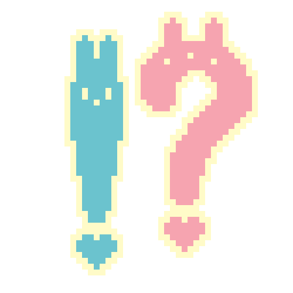
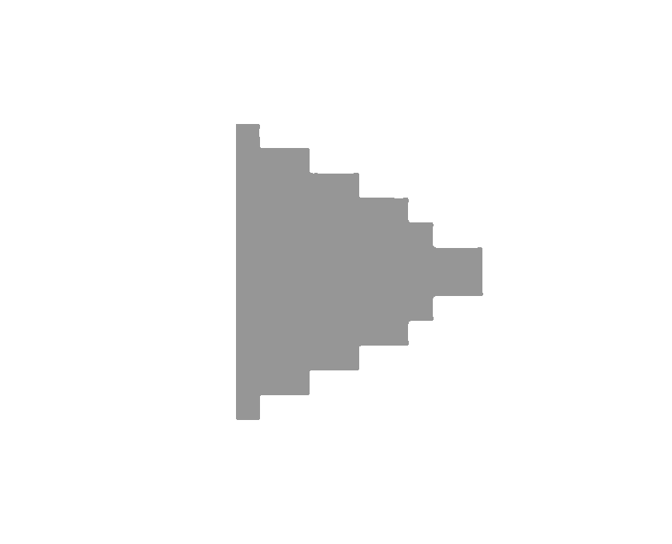
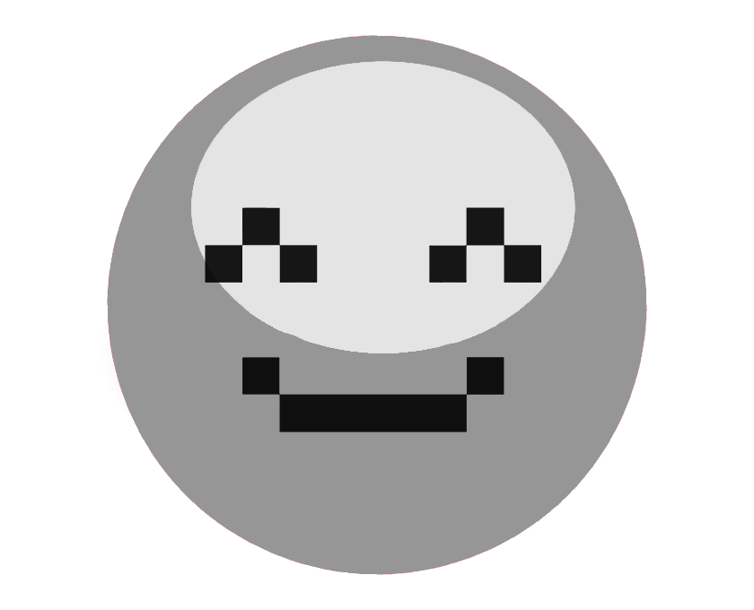
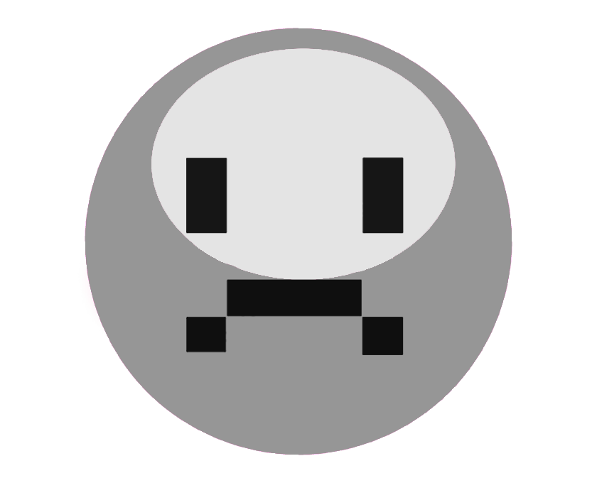
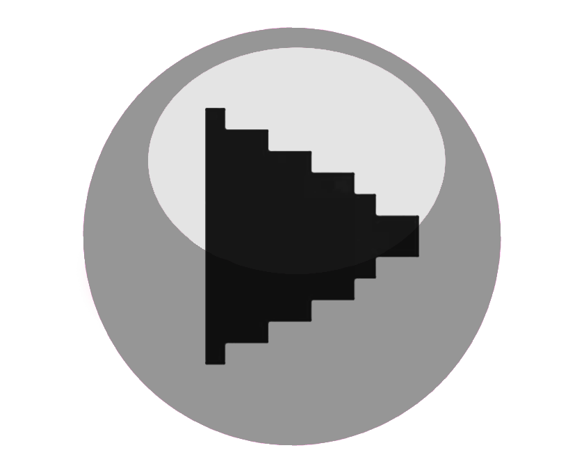
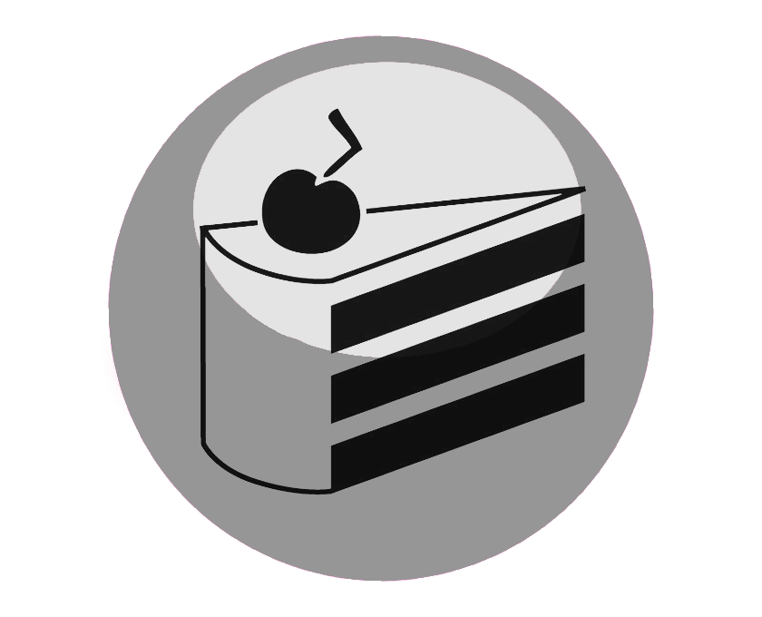
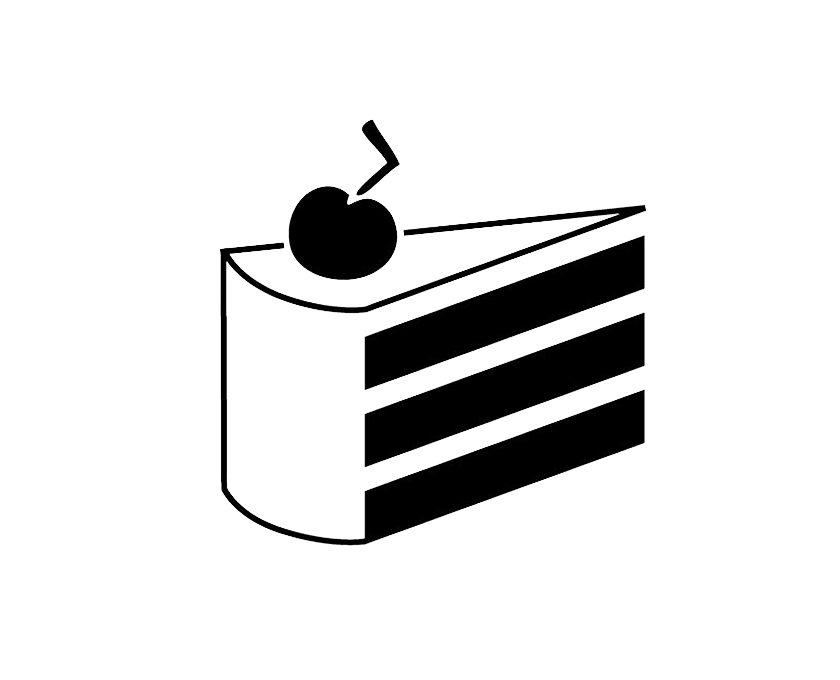
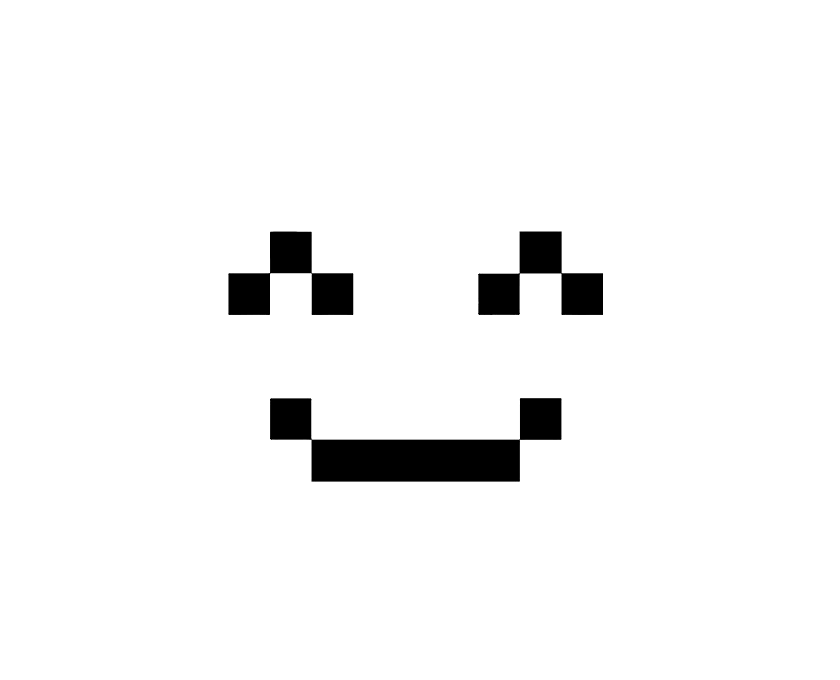
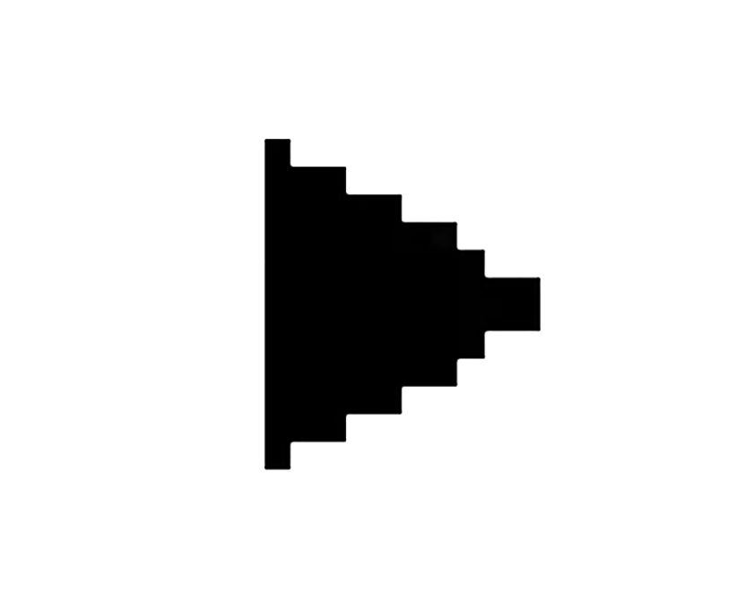

Digi Chiika (デジ ちいか)
Artist statement
By Ash & Elle Lilin | Cart 263: Project-1 at Concordia
Our initial idea for the project was to make a sort of digital “human” with our website. We wanted something interactive that adapts to what the user does or clicks. Mouchette.org1 from the course reading was a source of inspiration for this train of thought. It is a website that allows much exploration, going from visual images to text, poems, sounds and more. After researching, we discovered that the website itself is a reaction to the film Mouchette where a 13 year old french girl commits suicide after being raped. The themes of death, sex, violence and manipulating identity were explored, with later a quiz highlighting the movie’s hypocrisy, which is now “banned”. These websites' activism by provoking uncomfortability does question users about our society's taboos and gendered norms. Without knowing these heartbreaking origins at first, we wanted for our website to be something of its own
We wanted for our project, Digi Chiika (デジ ちいか), to be more about nostalgia and fun, which in a way is what we hope for every child to feel like. With a very pink and 90’s transparent tech aesthetic in mind, we eventually settled on making a virtual pet, similar to the Tamagotchi’s “kawaii” marketing2, that distinguished itself by targeting young girls for electronics that were usually reserved for boys. The Tamagotchi (たまごっち) was the first virtual pet toy produced and was released in Japan in 1996 by Bandai. This handheld device stimulates having a pet. It allows the users to interact with it through buttons. There are multiple actions we can do with it, and newer versions have more and more commands. For instance, we can feed, bathe and even play with it. The main point of the Tamagotchi pet is to not let it die! Death being a theme we would explore furthermore in the future. Taking inspiration from a thrifted Jia Yuan Tamagotchi replica as the main edited picture, it was perfect for the direction our project was aiming for. It ended up being the base visual inspiration. Its pink and heart shaped base was perfect for evoking the “kawaii” feeling we settled on and also hinted at this console being the literal heart of Digi Chiika. We used it to make a cohesive aesthetic while still implementing some more contemporary images, gifs and sound that were fitting. Returning to our inspirations, we really wanted to express our love for the “kawaii” aesthetic in this project. Directly translatable to cute or adorable, “Kawaii” (可愛い) is a japanese word that refers to a whole movement that is characterized by its heavy usage of things that evoke the “cute” feeling. It can also be: sweet, small, pitiful, childlike, innocent and more. These are qualities often associated with animals, children’s toys, cartoons, and even some fashion styles. Although its color pallettes can range from pastels to neon colours, pink would, without a doubt be the most iconic kawaii colour there is. This is why it's the most predominant color in our project, with the exception of teal for the pet and its mind animation for contrast. Symbols like stars, hearts, bows, wings and anything of such nature are often used in excess to communicate feelings. In the same area of communication, we were also inspired by the ASCII aesthetic and how characters can be used for art. It has a retro feel to it that is attractive. ASCII originates from the lack of images in digital computers because of the technical limitations from back then, like Brian Mackern argues it as less than “an aesthetic choice than a practical constraint for many artists”3. People craved visuals and images, so they started being creative with using text to provide graphics. One of the appeals of ASCII is how simple it is, as it uses characters found on most keyboards. It makes this style of art pretty accessible, because anyone who has access to one can easily use their own imagination and create an ASCII like we did for this project. デジ” (romanized as deji) refers to the japanese abbreviation of digital (デジタル). This word is fitting for our project, because of the digital nature of the pet. The abbreviation also gives it a stylized feel, which is the feeling we want to give off. It suits the aimed aesthetics. The fonts and chosen sounds help communicate the digital theme. Finally, the name “Digi Chiika” (デジ ちいか) is a play from Chiikawa (ちいかわ), another of our inspirations. Chiikawa is a Japanese creature that is known for being extremely kawaii! Not only is its appearance very cute, its mannerisms are as well. Chiikawa cannot speak, solely relying on noises as communication. This evokes the feeling of wanting to care for it, similar to a Tamagotchi. Despite being very adorable, the series Chiikawa also tackles deeper themes, such as poverty, anxiety and work related issues. However, these are all well hidden behind how cute and childlike the series is. This can display how powerful something kawaii can actually be. It is also effective in transmitting a message to different target audiences, because it can introduce mature topics in an approachable manner.
After loading our project, the webpage appears dormant, with its black background and a turned-off tamagotchi. What is most interesting here is the other similar console that represents our Digi Chiika dreaming using a set canvas for a meditative animation. Following a similar guideline as seen in class about animations, we used wave functions to make them expand and shrink, very slowly at first. By changing a value of the function, the animation will move faster if our mouse is over the consoles, we make it appear as if the Digi Chiika becomes excited or reacts to our presence. We also chose to add a chain for it to hang from beyond the webpage, along with matching cute charms as commitment to the theme while adding sound to them for further interactivity. Clicking the big power button turns the dormant page into an awake one. We achieve this by, not only changing the color of the background to a light pink and the dreaming animation going even faster, but especially from the screen and button of the Tamagotchi console lighting up to show a moving egg, eager to hatch. Pressing the now bright pink button, the dreaming animation is stopped, allowing the pet kitty to crawl out of its shell. When pressed again, a new screen is now displayed that asks us to name this pet, which accentuates the feeling of closeness with it. Writing something is mandatory as an alert event will follow otherwise. The input now displayed on top with a contrasting teal again, we are now met with multiple pink buttons with icons now usable for the user to either play, feed, return to "normal", make the pet happy, or sad. To make the animation of the birth of our new pet, as well as to see the impact of each action when its button is pressed, we used a website that allowed us to easily create a pixel art gif animation4. We changed the source of an image element in JavaScript depending on the user’s action and system. The mind box, previously showing the dream animation, now shows the 4 grey bars at “0%”,linked to the buttons' actions that rise right when pressed. If the bar reaches 100%, a unique outcome happens. The “feed” outcome, with its cake icon, references the video game Portal and shows text saying “the cake is a lie”5, which I also see as a reference to a surrealism painting La Trahison des images by René Magritte, with its renown phrase “ceci n’est pas une pipe”6. The “play” button which its icon is a play on the word since, although the intention is to play with the Digi Chiika, it references the triangle often used for music buttons, and also hints at the outcome. If the bar is reached, the piece nanana by Mietze Conte starts playing, rendering another actual play button teal that can pause & play this song Our intention with the “sad” outcome was to make the user feel bad for making the Digi Chiika sad, and testing it broke my heart everytime. To achieve this, we started playing a looping sound of a whining dog while also changing the background to a dark unsaturated blue, adding a gif that rapidly shows blue coding as if the mind was crashing, and adding an ascii art text of crying cat that extends below, in which scrolling down reveal supposed thought of the Digi Chiika “I don’t understand”. On the contrary, the “happy” outcome will start playing a purring sound loop, with a pink background, a gif of the famous Chiikawa and his friends frolicking and an ascii art of sparkles made visible. It is important to note that each outcome is not final and could all be activated if all bars reached 100%, the last one being more significant. Finally another important feature happens when the user presses the “power” button after a pet is named. If that happens, an alert event will inform the user that: “Pressing this button will power off your digital pet ... ૮꒰◞ ˕ ◟ ྀི꒱ა”. Continuing this process will turn the tamagotchi/console’s power off and reset everything back except for the music. The only addition is that the pet’s name chosen by the user, as well as one of the following kaomoji (which is a widely used alternative form of ASCII) : ["₍^. .^₎Ⳋ", "ฅ^•ﻌ•^ฅ", "૮꒰◞ ˕ ◟ ྀི꒱ა", "♡/ᐠ •ヮ• マ Ⳋ", "/ᐠ - ˕ -マ”, each symbolising the most significant emotion or action reached with the button will be a new created “p” element on the top right corner of the screen. Each Digi Chiika pet that is turned off will follow the same fate, below the last one. We were inspired by About Your World of Text7 by Andrew Badr, which creates a map where all can input characters. For our project, instead of having a “multi-player” connection, we had the one (with Digi Chiika), with a technically always expendable map that would create a space for all the Digi Chiika to rest. A way to offer a place and document the pet name and last emotion, vaguely similar to Brian Mackern’s netart latino database8 idea.
A big challenge for implementing this was that I first wanted to keep that information (of pet names) in the local storage, but because of lack of time we didn’t complete this feature that would have completed the idea of each Digi Chiika being their own creature that perhaps was alive for a second. We still think that this idea was conceived without the local storage. If we had to add another feature, we would love to add a console with a camera of the user, which would revert our gaze to the perspective of Digi Chiika, in a similar mindset of Lynn Hershman Leeson’s Net.art The dollie clone series9. There’s also challenges that are common with any code, such as: trying it out on different browsers and often encountering issues, constant need to inspect, etc. Adjusting the images to the correct spots and making sure they load on different browsers was a hassle to do at first. Making sure the sounds play took a few tries to successfully work as well, because it can bug. Sometimes little things like forgetting a semi-colon or calling the wrong file are things we struggled with and got stuck on. Not noticing a small typo can lead to the whole code not working, and is a frustrating feeling. Reading Resilient Web Design10, was great for motivation and mindset improval. One sentence that immediately stood out to us was: “1. First, just make it work. 2. Second, make it work better”. It was definitely what we needed to hear at this point of the project. We also liked this other sentence: “That first step is the most important: acknowledging and embracing unpredictability. That is the driving force (...)” While it is written with web design in mind, we do believe it is a favourable mindset in general.
In conclusion, we hope our digital interactive pet Digi Chiika brings amusement to those who interact with it, the same way it was for us to conceive it. With inspirations from Tamagotchi, ASCII, Chiikawa, and other internet cultures, we achieved a cute and fun project that more deeply explores the Tamagothi effect11, a term created to describe the psychological human response of this toy. As humans and especially children tend to attach themselves emotionally to inanimate objects like machines, robots or software agents where users perceive and relate to the object as an autonomous and “almost alive” self. The basic need of humans for social interaction will often enhance this belief of connection and more easily turn new technologies into a “virtual friend”, sometimes causing emotional distress when it dies, and/or making humans physically attached to their devices. Our goal was to bring tension between the cute aesthetic and subject and the “commitment” of naming it, keeping it alive, and/or ultimately questioning the user if they killed/ “powered off” the Digi Chikka.This class helped us apply animations and event listeners in JavaScript to change and add elements to the HTML and CSS to make our Webpage satisfying and interactive.
Bibliography:
1-★Martine Neddam, Mouchette.org, 1996. https://www.mouchette.org/
2-https://tamagotchi.fandom.com/wiki/Tamagotchi_(1996_Pet)
3-★Brian Mackern, netart latino database, 1999-2004. https://anthology.rhizome.org/netart-latino-database
4-https://www.piskelapp.com/p/create/sprite/
5-https://en.wikipedia.org/wiki/The_cake_is_a_lie
6-https://fr.wikipedia.org/wiki/La_Trahison_des_images
7-★Andrew Badr, About Your World of Text. https://www.yourworldoftext.com/chromeexperiments
8-★Brian Mackern’s, netart latino database. https://anthology.rhizome.org/netart-latino-database
9-★Lynn Hershman Leeson’s, The dollie clone series, 1996-1998. https://anthology.rhizome.org/dollie-clones
10-★ Resilient Web Design. https://resilientwebdesign.com/
11-https://en.wikipedia.org/wiki/Tamagotchi_effect
★About “kawaii”/Japanese studies & ASCII art:
-https://utppublishing.com/doi/abs/10.1558/sols.36212
-https://ir.library.osaka-u.ac.jp/repo/ouka/all/73599/irjs_3_013.pdf
-https://dl.acm.org/doi/pdf/10.1145/1833349.1778789
⠀⠀⠀⡼⢡⠖⢦⠉⡴⠲⡌⢧⠀⠀
⠀⡴⢋⣁⡘⢦⠾⠀⠷⡴⢃⣈⡙⢦
⠰⡇⢯⠀⡷⠀⢠⠤⣄⠀⢾⠀⡽⢸
⠀⠹⢬⠉⢁⡴⠋⠀⠘⢦⡈⠉⡥⠏
⠀⠀⠘⣆⠘⢧⣤⠤⣤⡼⠃⣰⠃⠀
⠀⠀⠀⠈⠳⢤⣀⣀⣀⡤⠖⠁



the cake is a lie
 ++++++++ ++++++
*° + + +
° + ⠀⠀⠀⠀⠀⠀⠀⠀⠀⠀⠀⠀⠀⠀⠀⠀⠀⠀⠀⠀⠀⠀⠀⠀⠀⠀⠀⠀⠀
⠀⠀⠀⠀⠀⠀⠠⡦⠀⠀⠀⠀⠀⠀⠀⠀⠀⠀⣿⠀⠀⠀⠀⠀⠀⠀⠀⠀⢀
⠀⠀⠀⢀⠀⠀⠀⠀⠀⠀⠀⠀⠀⠴⠖⠒⠒⢺⠓⠒⠒⠂⠀⠀⠀⠤⠤⡧⠄ ⠀⠼⠤⠄⠀
⠀⠀⠀⢹⠙⠀⠀⠀⡆⠀⠀⠀⠀⠀⠀⠀⠀⠀⡿⠀⠀⠀⠀⠀⠀⠀⠀⠀⠀
⠀⠀⠀⠀⠀⠀⠀⠒⣏⠒⠂⠀⠀⠀⠀⠀⠀⠀⠈⠀⠀⠀⠀⠀⠀⠀⠀+⠀ ° +
⠀⠀⠀⠀⠁⠀⠀⠀⠉⠀⠀⠀⠀⠀⠀⠀⠀*⠀⠀⠀⠀⠀⡄⠀⠀⠀⠀⠀
⠀⠀⠀⢠⣿⣿⣶⣶⣦⣤⣄⡀⠀⠀⠀⠀⠀⠀⠀⠀⠀⠀⠀⠀⠀⠀⠀⠀⠀⠀⠀⠀⠀⠀⠀⠀⠀⢀⣀⣀⣀⣀⣀⣀⣀⡀⠀⠀⠀⠀
⠀⠀⠀⣼⡇⠀⠈⠓⠦⣉⠛⠻⢷⣦⣄⣀⣀⣠⣤⣤⣴⣶⣶⣦⣤⣄⣀⣤⣤⣤⣶⠶⠿⠿⠟⠛⠛⠛⠛⠛⠛⣛⣻⠿⢛⣿⡿⠁⠀⠀
⠀⠀⠀⣿⡇⠀⠀⠀⠀⠉⠓⢦⡀⠉⠛⠛⠛⠉⠉⠁⠀⠀⠀⠀⠉⠉⠉⠉⠉⠀⠀⠀⠀⠀⠀⠀⣀⣤⠴⠒⠉⠉⠀⣠⣿⠋⠀⠀⠀⠀
⠀⠀⠀⢿⡇⠀⠀⠀⠀⠀⠀⠀⠙⢦⡀⠀⠀⠀⠀⠀⠀⠀⠀⠀⠀⠀⠀⠀⠀⠀⠀⠀⠀⢀⡤⠞⠁⠀⠀⠀⠀⢠⣾⡟⠁⠀⠀⠀⠀⠀
⠀⠀⠀⢸⣇⠀⠀⠀⠀⠀⠀⠀⠀⠀⠙⢤⠀⠀⠀⠀⠀⠀⠀⠀⠀⠀⠀⠀⠀⠀⠀⠀⢠⠟⠀⠀⠀⠀⠀⠀⣠⣿⠋⠀⠀⠀⠀⠀⠀⠀
⠀⠀⠀⢸⣿⠀⠀⠀⠀⠀⠀⠀⠀⠀⠀⠈⢧⠀⠀⠀⠀⠀⠀⠀⠀⠀⠀⠀⠀⠀⠀⢠⡏⠀⠀⠀⠀⠀⠀⢸⣿⠁⠀⠀⠀⠀⠀⠀⠀⠀
⠀⠀⠀⢸⣿⡀⠀⠀⠀⠀⠀⠀⠀⠀⠀⠀⠈⣧⠀⠀⠀⠀⠀⠀⠀⠀⠀⠀⠀⠀⠀⠘⢣⡀⠀⠀⠀⠀⠀⠘⣿⠀⠀⠀⠀⠀⠀⠀⠀⠀
⠀⠀⢀⣾⡏⠙⢦⣀⠀⠀⠀⠀⠀⠀⢀⣠⠔⠋⠀⠀⠀⠀⠀⠀⠀⠀⠀⠀⠀⠀⠀⠀⠀⠹⣄⠀⠀⠀⠀⢸⣿⠀⠀⠀⠀⠀⠀⠀⠀⠀
⠀⠀⣾⡏⠀⠀⠀⠈⠉⠓⠒⠒⠒⠊⠉⠀⠀⠀⠀⠀⠀⠀⠀⠀⠀⠀⠀⠀⠀⠀⠀⠀⠀⠀⠈⠙⢦⣀⣠⣿⠏⠀⠀⠀⠀⠀⠀⠀⠀⠀
⠀⣰⡟⠀⠀⠀⠀⠀⠀⠀⠀⠀⠀⠀⠀⠀⠀⠀⠀⠀⠀⠀⠀⠀⠀⠀⠀⠀⠀⠀⠀⠀⠀⠀⠀⠀⠀⣿⡏⠁⠀⠀⠀⠀⠀⠀⠀⠀⠀⠀
⢀⣿⠃⠀⠀⠀⠀⠀⠀⠀⠀⠀⠀⠀⠀⠀⠀⠀⠀⠀⠀⠀⠀⠀⠀⠀⠀⠀⠀⠀⠀⠀⠀⠀⠀⠀⠀⢻⡇⠀⠀⠀⠀⠀⠀⠀⠀⠀⠀⠀
⢸⣿⠀⠀⠀⠀⠀⠀⠀⠀⠀⠀⠀⠀⠀⠀⠀⠀⠀⠀⠀⠀⠀⠀⠀⠀⠀⠀⠀⠀⠀⠀⠀⠀⠀⠀⠀⣸⡇⠀⠀⠀⠀⠀⠀⠀⠀⠀⠀⠀
⣼⡇⠀⠀⠀⠀⠀⠀⠀⠀⠀⠀⢀⠀⠀⠀⠀⠀⠀⠀⠀⠀⠀⠀⠀⠀⠀⠀⠀⠀⠀⠀⠀⠀⠀⠀⠀⣿⡇⠀⠀⠀⠀⠀⠀⠀⠀⠀⠀⠀
⣿⡄⠀⠀⠀⠀⠀⠀⠀⠀⠀⠀⠈⢿⡙⡷⠒⣶⣶⢤⣀⠀⠀⠀⠀⠀⠀⠀⢀⣤⣶⣖⢲⣶⠖⠋⢹⣿⠀⠀⠀⠀⠀⠀⠀⠀⠀⠀⠀⠀
⢹⣧⡀⠀⠀⠀⠀⠀⠀⠀⠀⠀⠀⠀⠻⡁⠀⠿⠿⠇⢹⢣⡀⠀⠀⠀⠀⢠⢿⠹⠿⠿⢠⡿⠀⠀⣾⣇⡀⠀⠀⠀⠀⠀⠀⠀⠀⠀⠀⠀
⠀⠻⣷⡀⠀⠀⠀⠀⠀⠀⠀⠀⠀⠀⠻⠙⠲⠤⠤⠤⠿⠾⢷⠀⠀⠀⠀⡿⠞⠓⠒⠒⠋⡁⠀⠀⠈⠻⢷⣆⡀⠀⠀⠀⠀⠀⠀⠀⠀⠀
⠀⠀⢹⣷⠀⠀⠀⠀⠀⠀⠀⠀⠀⠀⠀⡁⠀ ⠀⠀⠀⠀⠀⠸⡆⠀⠀⢸⠃⡁⠀⠀⠀⢀⡤⠀⠀⠀⠀⠀⠙⢿⣦⡀⠀⠀⠀⠀⠀⠀⠀
⠀⠀⢸⣿⡆⠀⠀⠀⠀⣄⡀⠀⠀⠀⡁ ⠀ ⠀⠀⠀⠀⠀⠀⣿⠀⠀⣼⠀⡁⠀⠀⣰⠎⠀⠀⠀⠀⠀⠀⠀⠀⠙⢷⣆⠀⠀⠀⠀⠀⠀
⠀⠀⠀⣿⡇⠀⠀⠀⠀⠈⠙⢦⡀⠀⡁⠀ ⠀⠀⠀⠀⠀⠀⢸⣄⣀⣿⠀⠀⢀⡾⠁⠀⠀⠀⠀⠀⠀⠀⠀⠀⠀⠈⠻⣷⡀⠀⠀⠀⠀
⠀⠀⠀⣿⡇⠀⠀⠀⠀⠀⠀⠀⠉⠲⣄⡀⠀⠀⠀⠀⠀⠀⣀⣠⣷⠊⠀⢀⡴⠋⠀⠀⠀⠀⠀⠀⠀⠀⠀⠀⠀⠀⠀⠀⠙⣿⡄⠀⠀⠀
⠀⠀⠀⣿⡇⠀⠀⠀⠀⠀⠀⠀⠀⠀⠀⠻⠲⢤⣀⣀⠛⠉⠁⠀⣈⣧⠴⠋⠀⠀⠀⠀⠀⠀⠀⠀⠀⠀⠀⠀⠀⠀⠀⠀⠀⠘⢿⣆⠀⠀
⠀⠀⠀⣿⡇⠀⠀⠀⠀⠀⠀⠀⠀⠀⠀⢸⠀⠀⠀⠈⠉⠉⠉⠉⠉⠉⠀⠀⠀⠀⠀⠀⠀⠀⠀⠀⠀⠀⠀⠀⠀⠀⠀⠀⠀⠀⠘⢿⡄
⠀⠀⠀⣿⡇⠀⠀⠀⠀⠀⠀⠀⠀⠀⠀⠀⠀⠀⠀⠀⠀⠀⠀⠀⠀⠀⠀⠀⠀⠀⠀⠀⠀⠀⠀⠀⠀⠀⠀⠀⠀⠀⢠⡄⠀⠀⠀⠘⣿⡀
⠀⠀⠀⣿⡇⠀⠀⠀⠀⠀⠀⠀⠀⠀⠀ ⡁⠀⠀⠀⠀⠀⠀⠀⠀⠀⠀⠀⠀⠀⠀⠀⠀⠀⠀⠀⠀⠀⠀⠀⠀⠀⠀⡇⠀⠀⠀⠀⢻⡇
⠀⠀⠀⢻⡇⠀⠀⠀⠀⠀⠀⠀⠀⠀⠀⠀⠀⠀⠀⠀⠀⠀⠀⠀⠀⠀⠀⠀⠀⠀⠀⠀⠀⠀⠀⠀⠀⠀⠀⠀⠀⠀⠀⢸⠀⠀⠀⠀⠀⣿
⠀⠀⠀⢸⣧⠀⠀⠀⠀⠀⠀⠀⠀⠀⠀⠀⠀⠀⠀⠀⠀⠀⠀⠀⠀⠀⠀⠀⠀⠀⠀⠀⠀⠀⠀⠀⠀⠀⠀⠀⠀⠀⠀⢸⠀⠀⠀⠀⠀⢻
⠀⠀⠀⢸⣿⠀⠀⠀⠀⠀⠀⠀⠀⠀⠀⠀⡁⠀⠀⠀⠀⠀⠀⠀⠀⠀⠀⠀⠀⠀⠀⠀⠀⠀⠀⠀⠀⠀⠀⠀⠀⠀⠀⢸⠀⠀⠀⠀⠀⢸
⠀⠀⠀⠀⣿⡆⠀⠀⠀⠀⠀⠀⠀⠀⠀⠀⠀⠀⠀⠀⠀⠀⠀⠀⠀⠀⠀⠀⠀⠀⠀⠀⠀⠀⠀⠀⠀⠀⠀⠀⠀⠀⢀⡇⠀⠀⠀⠀⠀⢸
⠀⠀⠀⠀⢸⣷⠀⠀⠀⠀⠀⠀⠀⠀⠀⠀⠀⠀⠀⠀⠀⠀⠀⠀⠀⠀⠀⠀⠀⠀⠀⠀⠀⠀⠀⠀⠀⠀⠀⠀⠀⠀⢸⠇⠀⠀⠀⠀⠀⢸
⠀⠀⠀⠀⠈⣿⡄⠀⠀⠀⠀⠀⠀⠀⠀⠀⠀⠀⠀⠀⠀⠀⠀⠀⠀⠀⠀⠀⠀⠀⠀⠀⠀⠀⠀⠀⠀⠀⠀⠀⠀⠀⡜⠀⠀⠀⠀⠀⠀⢸
⠀⠀⠀⠀⠀⢹⣧⠀⠀⠀⠀⠀⠀⢠⡀⠀⠀⠀⠀⠀⠀⠀⠀⠀⠀⠀⠀⠀⠀⠀⠀⠀⠀⠀⠀⠀⠀⠀⠀⠀⠀⢠⡇⠀⠀⠀⠀⠀⠀⢸
⠀⠀⠀⠀⠀⠀⣿⡆⠀⠀⠀⠀⠀⠀⢻⡀⠀⠁⠀⠀⠀⠀⠀⠀⠀⠀⠀⠀⠀⠀⠀⠀⠀⠀⠀⠀⠀⠀⠀⠀⠀⣼⠀⠀⠀⠀⠀⠀⠀⣿
⠀⠀⠀⠀⠀⠀⠸⣿⠀⠀⠀⠀⠀⠀⠀⢷⠀⠀⠀I don't understand⠀⠀⠀⠀⠀⠀⠀⠀⡏⠀⠀⠀⠀⠀⠀⢠⣿
⠀⠀⠀⠀⠀⠀⠀⢻⣇⠀⠀⠀⠀⠀⠀⠈⢳⡀⠀⠀⠀⠀⠀⠀⠀⠀⠀⠀⠀⠀⠀⠀⠀⠀⠀⠀⠀⠀⠀⠀⣼⠁⠀⠀⠀⠀⠀⠀⣾⡇
⠀⠀⠀⠀⠀⠀⠀⢸⣿⠀⠀⠀⠀⠀⠀⠀⠀⠙⢦⣀⠀⠀⠀⠀⠀⠀⠀⠀⠀⠀⠀⠀⠀⠀⠀⠀⠀⠀⠀⠀⣿⠀⠀⠀⠀⠀⠀⢰⣿⠀
⠀⠀⠀⠀⠀⠀⠀⠘⣿⠀⠀⠀⠀⠀⠀⠀⠀⠀⠀⢹⣿⣶⣤⣤⣤⣤⣤⣤⣴⣶⡄⠀⠀⠀⠀⠀⠀⠀⠀⠸⡧⠀⠀⠀⠀⠀⢠⣿⠃⠀
⠀⠀⠀⠀⠀⠀⠀⠀⣿⡆⠀⠀⠀⠀⠀⠀⠀⠀⠀⢸⣷⠀⠈⠉⠉⠉⠉⠉⠁⢻⡇⠀⠀⠀⠀⠀⠀⠀⠀⠀⠀⠀⠀⠀⠀⢠⣾⠏⠀⠀
⠀⠀⠀⠀⠀⠀⠀⠀⣿⡇⠀⠀⠀⠀⠀⠀⠀⠀⠀⠀⣿⠀⠀⠀⠀⠀⠀⠀⠀⢸⡇⠀⠀⠀⠀⠀⠀⠀⠀⠀⠀⠀⠀⠀⢠⣿⠇⠀⠀⠀
⠀⠀⠀⠀⠀⠀⠀⠀⣿⡇⠀⠀⠀⠀⠀⠀⠀⠀⠀⠀⣿⡇⠀⠀⠀⠀⠀⠀⠀⢸⡇⠀⠀⠀⠀⠀⠀⠀⠀⠀⠀⠀⠀⣰⣿⠃⠀⠀⠀⠀
⠀⠀⠀⠀⠀⠀⠀⠀⣿⡇⠀⠀⠀⠀⠀⠀⠀⠀⠀⠀⣿⡇⠀⠀⠀⠀⠀⠀⠀⣸⡇⠀⠀⠀⠀⠀⠀⠀⠀⠀⠀⣠⣼⠟⠁⠀⠀⠀⠀⠀
⠀⠀⠀⠀⠀⠀⠀⠀⣿⡇⠀⠀⠀⠀⠀⠀⠀⠀⠀⠀⣿⡇⠀⠀⠀⠀⠀⠀⠀⣿⡇⠀⠀⠀⠀⠀⠀⠀⠀⢰⣿⠟⠁⠀⠀⠀⠀⠀⠀⠀
⠀⠀⠀⠀⠀⠀⠀⣴⡿⠇⠀⠀⠀⠀⠀⠀⠀⠀⠀⠀⣿⡇⠀⠀⠀⠀⠀⠀⣼⡿⠀⠀⠀⠀⠀⠀⠀⠀⠀⢸⣿⠀⠀⠀⠀⠀⠀⠀⠀⠀
⠀⠀⠀⠀⠀⠀⢸⣿⠀⠀⠀⠀⠀⠀⠀⠀⠀⠀⠀⠀⣿⡇⠀⠀⠀⠀⠀⢸⡟⠀⠀⠀⠀⠀⠀⠀⠀⠀⠀⠸⣿⠀⠀⠀⠀⠀⠀⠀⠀⠀
⠀⠀⠀⠀⠀⠀⢸⣿⠀⠀⣶⡄⠀⠀⠀⠀⠀⠀⠀⢀⣿⠃⠀⠀⠀⠀⠀⢸⣷⡀⠀⠀⠀⠀⠀⠀⠀⠀⠀⠀⣿⣧⠀⠀⠀⠀⠀⠀⠀⠀
⠀⠀⠀⠀⠀⠀⠀⠹⠷⣾⡟⠀⠀⢀⣤⠀⠀⠀⢠⣾⡏⠀⠀⠀⠀⠀⠀⠀⢹⣷⣄⠀⠀⠀⢠⣤⠀⠀⣶⣦⣸⣿⠀⠀⠀⠀⠀⠀⠀⠀
⠀⠀⠀⠀⠀⠀⠀⠀⠀⢘⣷⣤⣤⣼⡿⠷⠶⠿⢟⠋⠀⠀⠀⠀⠀⠀⠀⠀⠀⢙⣻⢷⣦⣤⣿⣿⣿⢾⣿⣛⠛⠁⠀⠀⠀⠀⠀⠀⠀⠀
++++++++ ++++++
*° + + +
° + ⠀⠀⠀⠀⠀⠀⠀⠀⠀⠀⠀⠀⠀⠀⠀⠀⠀⠀⠀⠀⠀⠀⠀⠀⠀⠀⠀⠀⠀
⠀⠀⠀⠀⠀⠀⠠⡦⠀⠀⠀⠀⠀⠀⠀⠀⠀⠀⣿⠀⠀⠀⠀⠀⠀⠀⠀⠀⢀
⠀⠀⠀⢀⠀⠀⠀⠀⠀⠀⠀⠀⠀⠴⠖⠒⠒⢺⠓⠒⠒⠂⠀⠀⠀⠤⠤⡧⠄ ⠀⠼⠤⠄⠀
⠀⠀⠀⢹⠙⠀⠀⠀⡆⠀⠀⠀⠀⠀⠀⠀⠀⠀⡿⠀⠀⠀⠀⠀⠀⠀⠀⠀⠀
⠀⠀⠀⠀⠀⠀⠀⠒⣏⠒⠂⠀⠀⠀⠀⠀⠀⠀⠈⠀⠀⠀⠀⠀⠀⠀⠀+⠀ ° +
⠀⠀⠀⠀⠁⠀⠀⠀⠉⠀⠀⠀⠀⠀⠀⠀⠀*⠀⠀⠀⠀⠀⡄⠀⠀⠀⠀⠀
⠀⠀⠀⢠⣿⣿⣶⣶⣦⣤⣄⡀⠀⠀⠀⠀⠀⠀⠀⠀⠀⠀⠀⠀⠀⠀⠀⠀⠀⠀⠀⠀⠀⠀⠀⠀⠀⢀⣀⣀⣀⣀⣀⣀⣀⡀⠀⠀⠀⠀
⠀⠀⠀⣼⡇⠀⠈⠓⠦⣉⠛⠻⢷⣦⣄⣀⣀⣠⣤⣤⣴⣶⣶⣦⣤⣄⣀⣤⣤⣤⣶⠶⠿⠿⠟⠛⠛⠛⠛⠛⠛⣛⣻⠿⢛⣿⡿⠁⠀⠀
⠀⠀⠀⣿⡇⠀⠀⠀⠀⠉⠓⢦⡀⠉⠛⠛⠛⠉⠉⠁⠀⠀⠀⠀⠉⠉⠉⠉⠉⠀⠀⠀⠀⠀⠀⠀⣀⣤⠴⠒⠉⠉⠀⣠⣿⠋⠀⠀⠀⠀
⠀⠀⠀⢿⡇⠀⠀⠀⠀⠀⠀⠀⠙⢦⡀⠀⠀⠀⠀⠀⠀⠀⠀⠀⠀⠀⠀⠀⠀⠀⠀⠀⠀⢀⡤⠞⠁⠀⠀⠀⠀⢠⣾⡟⠁⠀⠀⠀⠀⠀
⠀⠀⠀⢸⣇⠀⠀⠀⠀⠀⠀⠀⠀⠀⠙⢤⠀⠀⠀⠀⠀⠀⠀⠀⠀⠀⠀⠀⠀⠀⠀⠀⢠⠟⠀⠀⠀⠀⠀⠀⣠⣿⠋⠀⠀⠀⠀⠀⠀⠀
⠀⠀⠀⢸⣿⠀⠀⠀⠀⠀⠀⠀⠀⠀⠀⠈⢧⠀⠀⠀⠀⠀⠀⠀⠀⠀⠀⠀⠀⠀⠀⢠⡏⠀⠀⠀⠀⠀⠀⢸⣿⠁⠀⠀⠀⠀⠀⠀⠀⠀
⠀⠀⠀⢸⣿⡀⠀⠀⠀⠀⠀⠀⠀⠀⠀⠀⠈⣧⠀⠀⠀⠀⠀⠀⠀⠀⠀⠀⠀⠀⠀⠘⢣⡀⠀⠀⠀⠀⠀⠘⣿⠀⠀⠀⠀⠀⠀⠀⠀⠀
⠀⠀⢀⣾⡏⠙⢦⣀⠀⠀⠀⠀⠀⠀⢀⣠⠔⠋⠀⠀⠀⠀⠀⠀⠀⠀⠀⠀⠀⠀⠀⠀⠀⠹⣄⠀⠀⠀⠀⢸⣿⠀⠀⠀⠀⠀⠀⠀⠀⠀
⠀⠀⣾⡏⠀⠀⠀⠈⠉⠓⠒⠒⠒⠊⠉⠀⠀⠀⠀⠀⠀⠀⠀⠀⠀⠀⠀⠀⠀⠀⠀⠀⠀⠀⠈⠙⢦⣀⣠⣿⠏⠀⠀⠀⠀⠀⠀⠀⠀⠀
⠀⣰⡟⠀⠀⠀⠀⠀⠀⠀⠀⠀⠀⠀⠀⠀⠀⠀⠀⠀⠀⠀⠀⠀⠀⠀⠀⠀⠀⠀⠀⠀⠀⠀⠀⠀⠀⣿⡏⠁⠀⠀⠀⠀⠀⠀⠀⠀⠀⠀
⢀⣿⠃⠀⠀⠀⠀⠀⠀⠀⠀⠀⠀⠀⠀⠀⠀⠀⠀⠀⠀⠀⠀⠀⠀⠀⠀⠀⠀⠀⠀⠀⠀⠀⠀⠀⠀⢻⡇⠀⠀⠀⠀⠀⠀⠀⠀⠀⠀⠀
⢸⣿⠀⠀⠀⠀⠀⠀⠀⠀⠀⠀⠀⠀⠀⠀⠀⠀⠀⠀⠀⠀⠀⠀⠀⠀⠀⠀⠀⠀⠀⠀⠀⠀⠀⠀⠀⣸⡇⠀⠀⠀⠀⠀⠀⠀⠀⠀⠀⠀
⣼⡇⠀⠀⠀⠀⠀⠀⠀⠀⠀⠀⢀⠀⠀⠀⠀⠀⠀⠀⠀⠀⠀⠀⠀⠀⠀⠀⠀⠀⠀⠀⠀⠀⠀⠀⠀⣿⡇⠀⠀⠀⠀⠀⠀⠀⠀⠀⠀⠀
⣿⡄⠀⠀⠀⠀⠀⠀⠀⠀⠀⠀⠈⢿⡙⡷⠒⣶⣶⢤⣀⠀⠀⠀⠀⠀⠀⠀⢀⣤⣶⣖⢲⣶⠖⠋⢹⣿⠀⠀⠀⠀⠀⠀⠀⠀⠀⠀⠀⠀
⢹⣧⡀⠀⠀⠀⠀⠀⠀⠀⠀⠀⠀⠀⠻⡁⠀⠿⠿⠇⢹⢣⡀⠀⠀⠀⠀⢠⢿⠹⠿⠿⢠⡿⠀⠀⣾⣇⡀⠀⠀⠀⠀⠀⠀⠀⠀⠀⠀⠀
⠀⠻⣷⡀⠀⠀⠀⠀⠀⠀⠀⠀⠀⠀⠻⠙⠲⠤⠤⠤⠿⠾⢷⠀⠀⠀⠀⡿⠞⠓⠒⠒⠋⡁⠀⠀⠈⠻⢷⣆⡀⠀⠀⠀⠀⠀⠀⠀⠀⠀
⠀⠀⢹⣷⠀⠀⠀⠀⠀⠀⠀⠀⠀⠀⠀⡁⠀ ⠀⠀⠀⠀⠀⠸⡆⠀⠀⢸⠃⡁⠀⠀⠀⢀⡤⠀⠀⠀⠀⠀⠙⢿⣦⡀⠀⠀⠀⠀⠀⠀⠀
⠀⠀⢸⣿⡆⠀⠀⠀⠀⣄⡀⠀⠀⠀⡁ ⠀ ⠀⠀⠀⠀⠀⠀⣿⠀⠀⣼⠀⡁⠀⠀⣰⠎⠀⠀⠀⠀⠀⠀⠀⠀⠙⢷⣆⠀⠀⠀⠀⠀⠀
⠀⠀⠀⣿⡇⠀⠀⠀⠀⠈⠙⢦⡀⠀⡁⠀ ⠀⠀⠀⠀⠀⠀⢸⣄⣀⣿⠀⠀⢀⡾⠁⠀⠀⠀⠀⠀⠀⠀⠀⠀⠀⠈⠻⣷⡀⠀⠀⠀⠀
⠀⠀⠀⣿⡇⠀⠀⠀⠀⠀⠀⠀⠉⠲⣄⡀⠀⠀⠀⠀⠀⠀⣀⣠⣷⠊⠀⢀⡴⠋⠀⠀⠀⠀⠀⠀⠀⠀⠀⠀⠀⠀⠀⠀⠙⣿⡄⠀⠀⠀
⠀⠀⠀⣿⡇⠀⠀⠀⠀⠀⠀⠀⠀⠀⠀⠻⠲⢤⣀⣀⠛⠉⠁⠀⣈⣧⠴⠋⠀⠀⠀⠀⠀⠀⠀⠀⠀⠀⠀⠀⠀⠀⠀⠀⠀⠘⢿⣆⠀⠀
⠀⠀⠀⣿⡇⠀⠀⠀⠀⠀⠀⠀⠀⠀⠀⢸⠀⠀⠀⠈⠉⠉⠉⠉⠉⠉⠀⠀⠀⠀⠀⠀⠀⠀⠀⠀⠀⠀⠀⠀⠀⠀⠀⠀⠀⠀⠘⢿⡄
⠀⠀⠀⣿⡇⠀⠀⠀⠀⠀⠀⠀⠀⠀⠀⠀⠀⠀⠀⠀⠀⠀⠀⠀⠀⠀⠀⠀⠀⠀⠀⠀⠀⠀⠀⠀⠀⠀⠀⠀⠀⠀⢠⡄⠀⠀⠀⠘⣿⡀
⠀⠀⠀⣿⡇⠀⠀⠀⠀⠀⠀⠀⠀⠀⠀ ⡁⠀⠀⠀⠀⠀⠀⠀⠀⠀⠀⠀⠀⠀⠀⠀⠀⠀⠀⠀⠀⠀⠀⠀⠀⠀⠀⡇⠀⠀⠀⠀⢻⡇
⠀⠀⠀⢻⡇⠀⠀⠀⠀⠀⠀⠀⠀⠀⠀⠀⠀⠀⠀⠀⠀⠀⠀⠀⠀⠀⠀⠀⠀⠀⠀⠀⠀⠀⠀⠀⠀⠀⠀⠀⠀⠀⠀⢸⠀⠀⠀⠀⠀⣿
⠀⠀⠀⢸⣧⠀⠀⠀⠀⠀⠀⠀⠀⠀⠀⠀⠀⠀⠀⠀⠀⠀⠀⠀⠀⠀⠀⠀⠀⠀⠀⠀⠀⠀⠀⠀⠀⠀⠀⠀⠀⠀⠀⢸⠀⠀⠀⠀⠀⢻
⠀⠀⠀⢸⣿⠀⠀⠀⠀⠀⠀⠀⠀⠀⠀⠀⡁⠀⠀⠀⠀⠀⠀⠀⠀⠀⠀⠀⠀⠀⠀⠀⠀⠀⠀⠀⠀⠀⠀⠀⠀⠀⠀⢸⠀⠀⠀⠀⠀⢸
⠀⠀⠀⠀⣿⡆⠀⠀⠀⠀⠀⠀⠀⠀⠀⠀⠀⠀⠀⠀⠀⠀⠀⠀⠀⠀⠀⠀⠀⠀⠀⠀⠀⠀⠀⠀⠀⠀⠀⠀⠀⠀⢀⡇⠀⠀⠀⠀⠀⢸
⠀⠀⠀⠀⢸⣷⠀⠀⠀⠀⠀⠀⠀⠀⠀⠀⠀⠀⠀⠀⠀⠀⠀⠀⠀⠀⠀⠀⠀⠀⠀⠀⠀⠀⠀⠀⠀⠀⠀⠀⠀⠀⢸⠇⠀⠀⠀⠀⠀⢸
⠀⠀⠀⠀⠈⣿⡄⠀⠀⠀⠀⠀⠀⠀⠀⠀⠀⠀⠀⠀⠀⠀⠀⠀⠀⠀⠀⠀⠀⠀⠀⠀⠀⠀⠀⠀⠀⠀⠀⠀⠀⠀⡜⠀⠀⠀⠀⠀⠀⢸
⠀⠀⠀⠀⠀⢹⣧⠀⠀⠀⠀⠀⠀⢠⡀⠀⠀⠀⠀⠀⠀⠀⠀⠀⠀⠀⠀⠀⠀⠀⠀⠀⠀⠀⠀⠀⠀⠀⠀⠀⠀⢠⡇⠀⠀⠀⠀⠀⠀⢸
⠀⠀⠀⠀⠀⠀⣿⡆⠀⠀⠀⠀⠀⠀⢻⡀⠀⠁⠀⠀⠀⠀⠀⠀⠀⠀⠀⠀⠀⠀⠀⠀⠀⠀⠀⠀⠀⠀⠀⠀⠀⣼⠀⠀⠀⠀⠀⠀⠀⣿
⠀⠀⠀⠀⠀⠀⠸⣿⠀⠀⠀⠀⠀⠀⠀⢷⠀⠀⠀I don't understand⠀⠀⠀⠀⠀⠀⠀⠀⡏⠀⠀⠀⠀⠀⠀⢠⣿
⠀⠀⠀⠀⠀⠀⠀⢻⣇⠀⠀⠀⠀⠀⠀⠈⢳⡀⠀⠀⠀⠀⠀⠀⠀⠀⠀⠀⠀⠀⠀⠀⠀⠀⠀⠀⠀⠀⠀⠀⣼⠁⠀⠀⠀⠀⠀⠀⣾⡇
⠀⠀⠀⠀⠀⠀⠀⢸⣿⠀⠀⠀⠀⠀⠀⠀⠀⠙⢦⣀⠀⠀⠀⠀⠀⠀⠀⠀⠀⠀⠀⠀⠀⠀⠀⠀⠀⠀⠀⠀⣿⠀⠀⠀⠀⠀⠀⢰⣿⠀
⠀⠀⠀⠀⠀⠀⠀⠘⣿⠀⠀⠀⠀⠀⠀⠀⠀⠀⠀⢹⣿⣶⣤⣤⣤⣤⣤⣤⣴⣶⡄⠀⠀⠀⠀⠀⠀⠀⠀⠸⡧⠀⠀⠀⠀⠀⢠⣿⠃⠀
⠀⠀⠀⠀⠀⠀⠀⠀⣿⡆⠀⠀⠀⠀⠀⠀⠀⠀⠀⢸⣷⠀⠈⠉⠉⠉⠉⠉⠁⢻⡇⠀⠀⠀⠀⠀⠀⠀⠀⠀⠀⠀⠀⠀⠀⢠⣾⠏⠀⠀
⠀⠀⠀⠀⠀⠀⠀⠀⣿⡇⠀⠀⠀⠀⠀⠀⠀⠀⠀⠀⣿⠀⠀⠀⠀⠀⠀⠀⠀⢸⡇⠀⠀⠀⠀⠀⠀⠀⠀⠀⠀⠀⠀⠀⢠⣿⠇⠀⠀⠀
⠀⠀⠀⠀⠀⠀⠀⠀⣿⡇⠀⠀⠀⠀⠀⠀⠀⠀⠀⠀⣿⡇⠀⠀⠀⠀⠀⠀⠀⢸⡇⠀⠀⠀⠀⠀⠀⠀⠀⠀⠀⠀⠀⣰⣿⠃⠀⠀⠀⠀
⠀⠀⠀⠀⠀⠀⠀⠀⣿⡇⠀⠀⠀⠀⠀⠀⠀⠀⠀⠀⣿⡇⠀⠀⠀⠀⠀⠀⠀⣸⡇⠀⠀⠀⠀⠀⠀⠀⠀⠀⠀⣠⣼⠟⠁⠀⠀⠀⠀⠀
⠀⠀⠀⠀⠀⠀⠀⠀⣿⡇⠀⠀⠀⠀⠀⠀⠀⠀⠀⠀⣿⡇⠀⠀⠀⠀⠀⠀⠀⣿⡇⠀⠀⠀⠀⠀⠀⠀⠀⢰⣿⠟⠁⠀⠀⠀⠀⠀⠀⠀
⠀⠀⠀⠀⠀⠀⠀⣴⡿⠇⠀⠀⠀⠀⠀⠀⠀⠀⠀⠀⣿⡇⠀⠀⠀⠀⠀⠀⣼⡿⠀⠀⠀⠀⠀⠀⠀⠀⠀⢸⣿⠀⠀⠀⠀⠀⠀⠀⠀⠀
⠀⠀⠀⠀⠀⠀⢸⣿⠀⠀⠀⠀⠀⠀⠀⠀⠀⠀⠀⠀⣿⡇⠀⠀⠀⠀⠀⢸⡟⠀⠀⠀⠀⠀⠀⠀⠀⠀⠀⠸⣿⠀⠀⠀⠀⠀⠀⠀⠀⠀
⠀⠀⠀⠀⠀⠀⢸⣿⠀⠀⣶⡄⠀⠀⠀⠀⠀⠀⠀⢀⣿⠃⠀⠀⠀⠀⠀⢸⣷⡀⠀⠀⠀⠀⠀⠀⠀⠀⠀⠀⣿⣧⠀⠀⠀⠀⠀⠀⠀⠀
⠀⠀⠀⠀⠀⠀⠀⠹⠷⣾⡟⠀⠀⢀⣤⠀⠀⠀⢠⣾⡏⠀⠀⠀⠀⠀⠀⠀⢹⣷⣄⠀⠀⠀⢠⣤⠀⠀⣶⣦⣸⣿⠀⠀⠀⠀⠀⠀⠀⠀
⠀⠀⠀⠀⠀⠀⠀⠀⠀⢘⣷⣤⣤⣼⡿⠷⠶⠿⢟⠋⠀⠀⠀⠀⠀⠀⠀⠀⠀⢙⣻⢷⣦⣤⣿⣿⣿⢾⣿⣛⠛⠁⠀⠀⠀⠀⠀⠀⠀⠀









